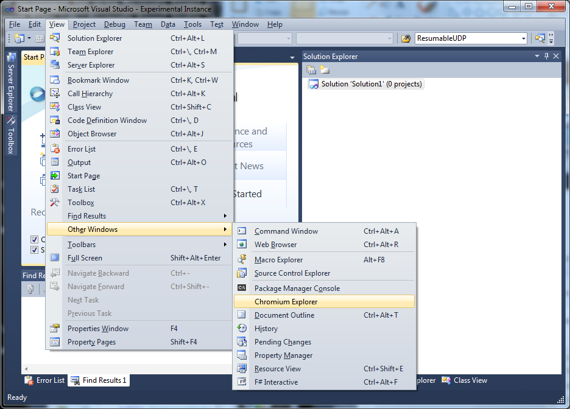
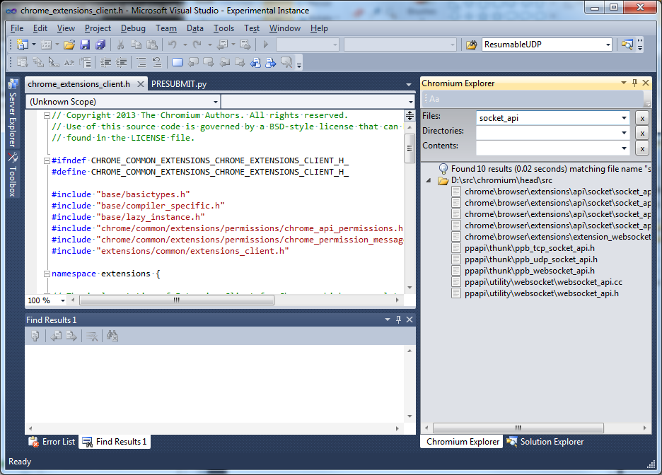
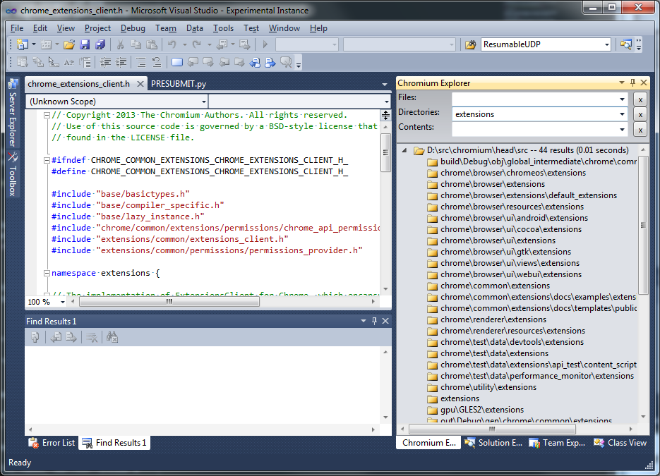
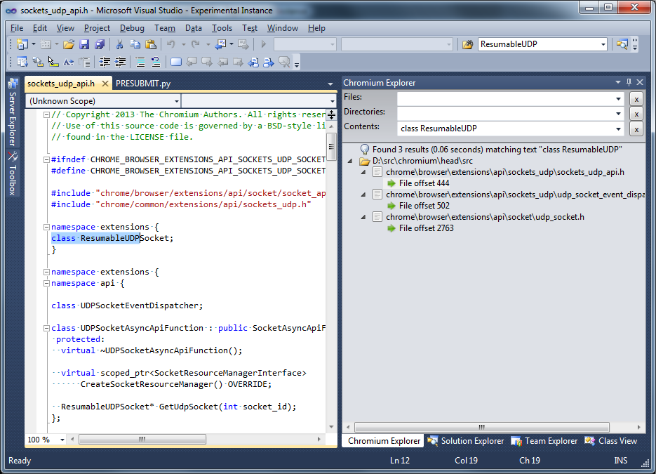
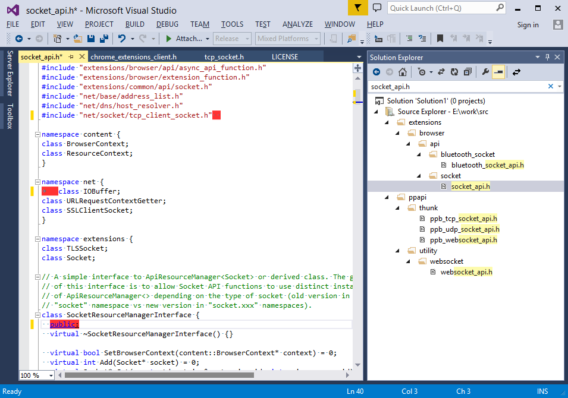
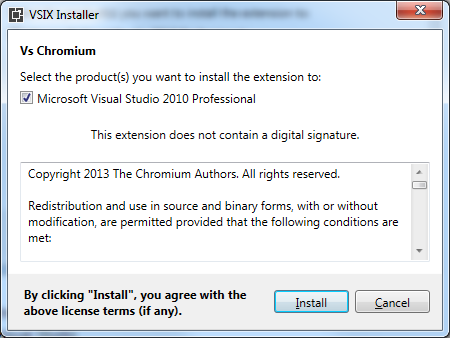
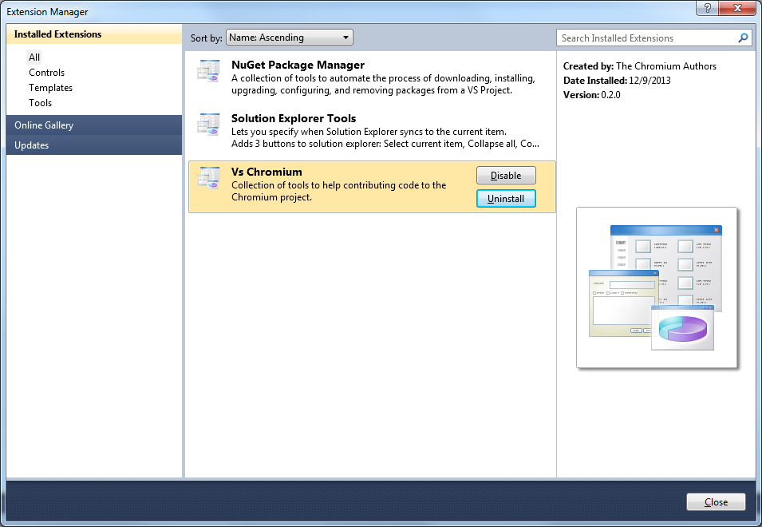

Overview
VsChromium is a Visual Studio Extension containing a collection of tools to help contributing code to the Chromium project when using Visual Studio as code editor.
VsChromium currently offers 2 distinct sets of features:
- Source code navigation and instant search capabilities in a new tool window named Chromium Explorer.
- Highlighting in the VS editor of a (currently small) subset of Chromium Coding Style violations.
Chromium Explorer
"Chromium Explorer" is a custom Tool Window aimed at making it easy and fast to navigate and search a Chromium local enlistment. The tool window is accessible from the "View | Other Windows | Chromium Explorer" menu entry.
At the top of the window, there are 3 search boxes that allow searching files and folders of the Chromium enlistement. As noted above, the main focus here is to enable precise, powerful and fast searches.
Chromium Explorer - Opening files and indexing
Once the Chromium Explorer tool winow is active, it detects when a source
file from a local Chromium enlistment is opened in the Visual Studio
editor and starts indexing
Warning: The indexing process can take significantly longer if the enlistment is located on an HDD drive. This is expected, as the indexing process has to read 90,000+ source files from disk. An HDD makes this process a lot slower due to disk seek times.
Warning: We also saw significant performance degradation on a SSD when "Real Time" disk activity monitoring of certain Anti Virus programs is active. This can be easily worked around by configuring the Anti Virus software to exclude the directory containing the local Chromium enlistment.
Note: The "indexing" process is technically very straighforward: after enumerating all the files and directories of the Chromium enlistement, relevant source files are all loaded in memory so they can be searched extremely efficiently later on. This process assumes there is enough memory available to keep all files in physical memory. With a recent (as of October 2013) Chromium enlistment, this requires about 1.5GB of memory.
Note: Similar to the coding style checkers, there is no requirement to have a Chromium solution/project open, although having one doesn't hurt either.
Once the indexing process is over (there are progress indicators in the UI), the Chromium Explorer tool window displays a tree containing the files and directories of the enlistment.

Chromium Explorer - File name search
The top search box can be used to search for file names matching a given pattern. As shown in the picture below, a "file name" search should take at most a few milliseconds on a typical developer machine:
Search pattern format
The rules for "pattern" are similar to the syntax used in .gitignore files, except for the first rule below.
- A simple string without the "/", "\" or "*" characters matches any file name containing the simple string. This rule enables making the "common case" faster to type, as without the wildcards, the pattern would only match full file names (including the extension).
- The pattern can contain one or many "*" character to perform wildcard matching.
- The pattern may contain "/" or "\" characters to match part of the path forming the file name.
- The pattern may start with "**/" or contain "/**/" characters to match zero or more directories of the path forming the file name.
Examples
| Pattern | Matches |
|---|---|
| foo | "foobar.cc", "afoobar.txt", etc. anywhere in folder hierarchy. |
| f*oo*.txt | "foo.txt", "f123oo.txt", "f123oo4bar.txt" etc. anywhere in folder hierarchy. |
| foo/bar.txt | any file named "bar.txt" inside a "foo" directory anywhere in folder hierarchy. |
| foo/ | All files under a "foo" directory (recursively) anywhere in folder hierarchy. |
| foo/**/bar.txt | any file named "bar.txt" residing in any sub-directory of "foo" anywhere in folder hierarchy. |
Chromium Explorer - Directory name search
The middle search box can be used to search for directory names matching a given pattern. The rules for "pattern" are similar to the rules for file name search.
Chromium Explorer - Text search
The "Text search" feature is equivalent to the "Find in files" built-in feature of Visual Studio with the difference that it performs much faster due to the indexing process. On a typical developer machine, a text search takes about 100 milliseconds, where as the equivalent "Find in files" search takes 30+ seconds.
The search engine performs a "raw" string search in the text of the files, so the search pattern can be any combination of characters (including space, tabs and special characters such as <, >, &, etc This can be useful to search for specific C++ constructs. For example, to look for all classes derived from "Foo", search for the pattern "public Foo" or ": public Foo"
The search results contain one entry per file, and one sub-entry per match in the file. Both can be clicked in the Tree View to navigate to the corresponding location.
Note that there is currently no support for wildcards and the search is always case sensitive.
Chromium Explorer - Keyboard shortcuts
| Feature | Shortcut |
|---|---|
| File name search | Alt-; |
| Directory name search | Alt-Shift-; |
| Text search | Ctrl-Shift-; |
Editor features
Chromium Coding Style checker
When a source file belonging to a Chromium enlistement is opened in the Visual studio editor, a few custom "classifiers" (or "colorizers") kick off and inspect the code for Coding Style violations. Each violation is indicated with a red background highlighing the text violating a rule.
Note: There is no requirement to have a Chromium solution open, as the discovery is based on the content of the file system, not on the list of projects/solutions opened in Visual Studio.
List of supported style violations
- Lines longer than 80 columns (all text files)
- Trailing spaces (all text files)
- TAB instead of space characters (all text files)
- Invalid use of "else if" on new line (C++ file)
- Invalid indentation of "public:", etc. modifiers (C++ files)
- Space after "for" keyword (c++ files)
- Usage of CRLF instead of LF as end of line characters (all text files)
Note: The set of rules currently supported is minimal but is helpful for a developer new to the Chromium Coding Style rules.

Format comment
The Format Comment command (Ctrl-K C) allows formatting c++ style comment block (i.e. list of lines starting with "//") to wrap at 80 columns.
- If there is no text selection, Format Comment first expands the selection to contains the first line and last line of the comment block.
- If there is a text selection active, Format Comment formats only the block comment covered by the selection start and end lines.
Configuration files
One of the goals of VsChromium is to work "out of the box". To enable this, a certain number of assumptions had to be made. Most of these assumptions are customizable through text based configuration files.
By default, configuration files are installed and stored in the "Configuration" sub directory of the VsChromium installtion directory, typically the Visual Studio extension directory. Overriding a configuration file is as easy as creating a "VsChromium" directory in the Windows' user folder ("c:\users\username"), make a copy of the relevant configuration file below, and edit it.
After changing one or more configuration files, it is required to restart Visual Studio for the changes to take effect.
| ChromiumEnlistmentDetection.patterns | This file is used to determine whether file belongs to a Chromium enlistment. It is simply a list of directory and files names to look for when looking at the parent directories of a file. There should be no need to customize this file unless the Chromium enlistement significanly changes. |
| ChromiumStyleCheckers.disabled | This file can be used to disable various style checkers. Simply un-comment the corresponding line. |
| ChromiumCodingStyle.ignore | This file uses a ".gitignore" syntax to determine which files should not be validated by the Chromium Coding Style checker. This is needed because a Chromium enlistment contains third party libraries and generated files that don't always follow the Chromium Coding Style conventions. |
| ChromiumExplorer.ignore | This file uses a ".gitignore" syntax to filter the list fo directories and files to display in the Chromium Explorer tool window. The file could be in theory empty, but it is sometimes useful to ignore files/directories that don't contains files meaningful to day to day development (e.g. *.pdb, *.obj, etc. files). Note this file is also implicitly used to filter the results of "search file names" and "search directory names". |
| SearchableFiles.ignore | This file uses a ".gitignore" syntax to exclude files from the "text search" feature. This is required to avoid loading GBs of irrelevant files in memory (e.g. build output files such as .obj, .exe, etc. fiels). This allows decreasing the amount of files loaded in memory from 30+GB typically found in a local Chromium enlistement directory to a more reasonable ~1.2GB of relevant source files. |
| SearchableFiles.include | This file uses a (reverse) ".gitignore" syntax to include files into the "text seach" feature. This file is used as a 2nd pass after "SearchableFile.ignore" to filter out even more using inclusion rules. |
Installation Instructions
- Download VsChromiumPackage.vsix
- Open the file: this will open a Visul Studio Installation dialog.
- 
- Click "Install"
- Start Visual Studio
- Go to "Tools | Extensions Manager..."
- Ensure "VsChromium" is present and enabled.
- 
Requirements
- VsChromium is compatible with Visual Studio Pro 2010 and up.
- A Windows 64-bit operating system is required. Only tested on Windows 7.
- Visual Studio 2012 themes are supported (to some extent).
- Express editions of Visual Studio are not supported due to limitations of VS extensibility framework for Express.
Technical specifications
From a technical perpective, the "search engine" used by VsChromium has been designed with the assumption that a good amount (e.g. at least 2GB) of physical memory is available. This allows the search engine to load all relevant source files in memory for fast brute-force text search.
The search engine has been carefully optimized to make use of multi-core processors for many internal operations. So, in general, the more cores are available, the faster the engine is.
For example, a HP Z620 with 2x8 cores processors and hyperthreading enabled, the search engine uses 32 worker threads (1 thread per logical processor).
- During initial file loading from an SSD, the engine loads 90,000+ files in parrallel and achieves ~80% CPU utilization. All files are usually loaded in less than 10 sec.
- During a "Text Search" operation, the engine paritions the files to search into 32 equally sized partitions, runs a search query accross 32 threads, then merge the results before sending back to the VsChromium package. Using efficient string search algorithms ( bndm and Boyer-Moore), the search engine achieves throughputs of 15+GB/s, meaning a text search usually takes less than 0.1s with 1.2GB of source files.
Server process
To avoid competing with the VM address space of the Visual Studio process (devenv.exe), the VsChromium search engine runs as a child process of Visual Studio.
Example of memory usage and process relationship after loading ~1.2GB of source files:

The server process is always automatically terminated when the Visual Studio process is terminated. Each instance of Visual Studio uses its own instance of the VsChromium server process.
IPC: The VsChromium package and the VsChromium server process use protobuf over a local TCP connection as IPC mechanism.
To avoid running out of VM address space, the search engine runs as a 64-bit process.